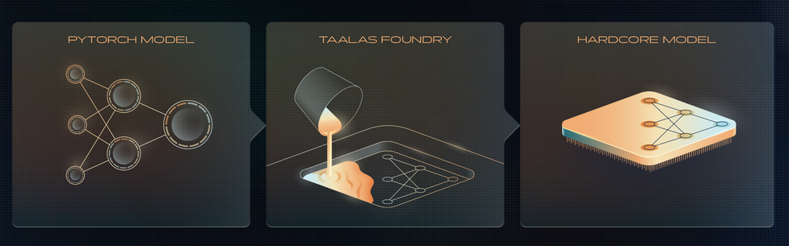

How Taalas "prints" LLM onto a chip?
A startup called Taalas, recently released an ASIC chip running Llama 3.1 8B (3/6 bit quant) at an inference rate of 17,000 tokens per seconds. That's like writing around 30 A4 sized pages in one second. They claim it's 10x cheaper in ownership cost than GPU based inference systems and is 10x less electricity hog. And yeah, about 10x faster than state of art inference.
I tried to read through their blog and they've literally "hardwired" the model's weights on chip. Initially, this didn't sound intuitive to me. Coming from a Software background, with hobby-ist understanding of LLMs, I couldn't wrap my head around how you just "print" a LLM onto a chip. So, I decided to dig into multiple blogposts, LocalLLaMA discussions, and hardware concepts. It was much more interesting than I had thought. Hence this blogpost.
Basics
Taalas is a 2.5 year old company and it's their first chip. Taalas's chip is a fixed-function ASIC (Application-Specific Integrated Circuit). Kinda like a CD-ROM/Game cartridge, or a printed book, it only holds one model and cannot be rewritten.
HOW NVIDIA GPUs process stuff? (Inefficiency 101)
LLMs consist of sequential Layers. For eg. Llama 3.1 8B has 32 layers. The task of each layer is to further refine the input. Each layer is essentially large weight matrices (the model's 'knowledge').
When a user inputs a prompt, it is converted into an vector of numbers aka embeddings.
On a normal GPU, the input vector enters the compute cores. Then GPU fetches the Layer 1 weights from VRAM/HBM (GPU's RAM) , does matrix multiplication, stores the intermediate results(aka activations) back in VRAM. Then it fetches the Layer 2 weights, and previous result, does the math, and saves it to VRAM again.
This cycle continues till 32nd layer just to generate a single token. Then, to generate the next token, the GPU repeats this entire 32-layer journey.
So, due to this constant back-and-forth the memory bus induces latency and consumes significant amounts of energy. This is the memory bandwidth bottleneck, sometimes loosely called the Von Neumann bottleneck or the "memory wall."
Breaking the wall!
Taalas sidesteps this wall entirely. They just engraved the 32 layers of Llama 3.1 sequentially on a chip. Essentially, the model's weights are physical transistors etched into the silicon.
Importantly, they also claim to have invented a hardware scheme where they can store a 4-bit data and perform the multiplication related to it using a single transistor. I will refer it as their 'magic multiplier'
Now, when the user's input arrives, it gets converted into a vector, and flows into physical transistors making up Layer1. It does multiplication via their 'magic multiplier' and instead of result being saved in a VRAM, the electrical signal simply flows down physical wires into the Layer 2 transistors (via pipeline registers from what I understand). The data streams continuously through the silicon until the final output token is generated.
So, they don't use any RAM?
They don't use external DRAM/HBM, but they do use a small amount of on-chip SRAM.
Why SRAM? Due to cost and complexity, manufacturers don't mix DRAM and logic gates. That's why GPUs have separate VRAM. (Also SRAM isn't facing supply chain crisis, DRAM is).
Taalas uses this on-chip SRAM for the KV Cache (the temporary memory/context window of an ongoing conversation) and to hold LoRA adapters for fine tuning.
But isn't fabricating a custom chip for every model super expensive?
Technically yes, I read lots of comments saying that.
But Taalas designed a base chip with a massive, generic grid of logic gates and transistors. To map a specific model onto the chip, they only need to customize the top two layers/masks. While it's still slow, but it's much faster than building chips from ground up.
It took them two months, to develop chip for Llama 3.1 8B. In the AI world where one week is a year, it's super slow. But in a world of custom chips, this is supposed to be insanely fast.
As someone stuck running local models on a laptop without a massive GPU, I am keeping my fingers crossed for this type of hardware to be mass-produced soon.